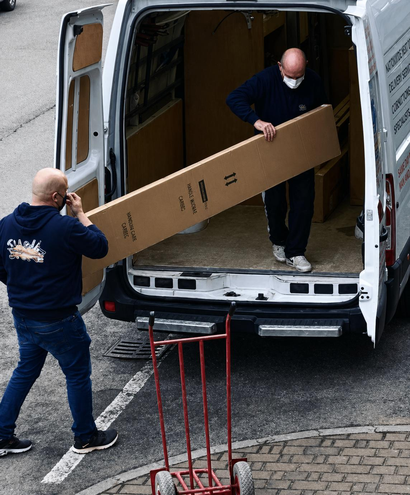
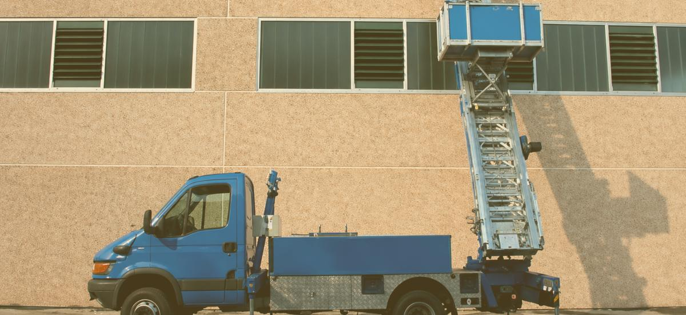

Stima online
Traslochi
Imballiamo, smontiamo, trasportiamo e rimontiamo. Anche ai piani alti.
Calcola il preventivoTraslochi organizzati, dalla casa all’ufficio
Seguiamo traslochi di case, uffici e negozi. Imballiamo, smontiamo e rimontiamo i mobili e portiamo tutto a destinazione, anche ai piani alti.
A partire da
550 € IVA inclusa
Monolocale, in zona, con ascensore. Materiali e finiture li scegliamo insieme al sopralluogo.
Come lo facciamo
- Passo 1:Sopralluogo o videochiamata Vediamo cosa c’è da spostare, anche in videochiamata, e ti diamo un preventivo chiaro.
- Passo 2:Imballaggio Proteggiamo mobili e oggetti con il materiale giusto. Se vuoi, imballiamo noi tutto.

Passo 3:Carico e trasporto Smontiamo, carichiamo con attenzione e portiamo tutto a destinazione.
Passo 4:Piani alti senza fatica Con la piattaforma elevatrice portiamo i mobili dalla finestra o dal balcone.- Passo 5:Scarico e rimontaggio Rimontiamo i mobili e li sistemiamo dove vuoi tu.
Cosa facciamo
- Traslochi di case
- Uffici e negozi
- Imballaggio e materiale
- Smontaggio e montaggio mobili
- Oggetti pesanti e ingombranti
- Piattaforma elevatrice per i piani alti
- Deposito e custodia
Domande frequenti
Fate traslochi a Venezia e nelle isole?
Scrivici: li valutiamo caso per caso, perché servono trasporto via acqua e permessi.
Fate traslochi fuori regione?
Sì, organizziamo traslochi in tutta Italia.
Potete tenere i mobili in deposito?
Sì, su richiesta. Tempi e costi li concordiamo nel preventivo.
Traslochi: a partire da 550 €, IVA inclusa. Sopralluogo e preventivo gratuiti.
Calcola il preventivo Lavoro successivo Parquet
Lavoro successivo Parquet